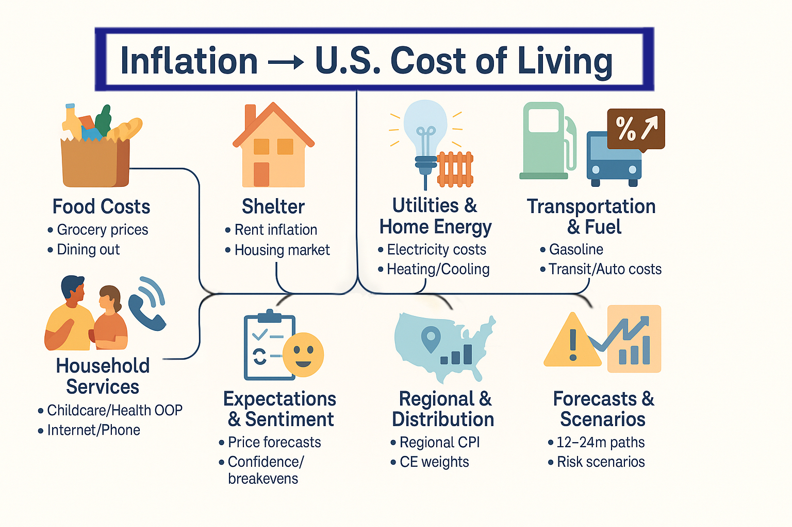

Introduction
“Eggs at $4? Gas over $5? Rent jumped—again.”
On a chilly morning in early 2023, a grocery receipt went viral: the total looked ordinary, but line items told a story—eggs doubled from a year earlier, milk and bread were up, and a short drive across town now cost noticeably more. That receipt captured what many households felt: inflation isn’t abstract—it shows up in carts, bills, and budgets.This project asks a simple question with complex answers: How does inflation transmit into the everyday cost of living in the United States—across food, housing, utilities, transportation, and beyond—over time?
Topic: What This Project Is (and Is Not)
Focus. We study time-evolving U.S. living costs and how inflationary pressures pass through to households. We will analyze multiple cost categories—food, shelter (rent/owner-equivalent rent), utilities (electricity, piped gas, water/sewer/trash), transportation (gasoline, transit, auto insurance/maintenance), and selected household services (e.g., childcare, healthcare out-of-pocket)—to understand magnitude, timing (lags), heterogeneity, and regime shifts.
Not here. This page does not cover datasets, cleaning, or model specifics (they are in other tabs). Here we set the stage: why it matters, what angles we’ll take, what has been learned, and which questions will guide the work.
The Big Picture
Below is the conceptual map of the project. Each angle includes 3–4 temporal data sources we could analyze (links). This supports a modular site structure where each angle becomes a section with its own time-series models and findings.

Literature Review
This review synthesizes evidence across our Big Picture angles—food, shelter, utilities & energy, transportation, expectations, supply chains & trade, and regional/distributional impacts—and explains how each theme informs our time-series choices (e.g., ARDL/local projections, asymmetric pass-through, regime/break tests, STL/X-11, and panel comparisons).
Food prices: pass-through, lags, and inputs
Retail food inflation typically shows incomplete and lagged pass-through from upstream shocks; energy and labor costs often matter more than raw farm commodities at the shelf. USDA’s Food Price Outlook documents pandemic-era supply disruptions, disease shocks (e.g., HPAI for eggs), and category-specific timing, providing monthly CPI/PPI series and clear event windows that motivate distributed-lag modeling by category (USDA Economic Research Service 2025). Recent Federal Reserve research quantifies U.S. farm-to-retail pass-through magnitudes and delays, offering priors for our ARDL/local-projection specifications and a benchmark for cross-category heterogeneity (Scott, Lusomparodziewicz, and Cowley 2024).
Shelter: stickiness and measured lags between market rents and CPI
A central result is that CPI shelter responds with multi-month lags to movements in market rents due to lease terms, renewal smoothing, and rent-sample design. Ball (2025) formalizes mechanisms that reconcile diverging paths of private rent indices and CPI shelter during 2022–2024. Practitioner analyses reach similar conclusions, stressing persistence risks and the role of market-rent leading indicators (Zillow Research 2025; Roosevelt Institute 2025). These findings motivate our empirical design in which private rent indexes lead CPI shelter; we estimate lag lengths and persistence and run pre/post-COVID stability checks.
Transportation fuels: asymmetric “rockets and feathers”
The oil-to-gasoline pass-through literature documents asymmetry—pump prices rise faster than they fall (“rockets and feathers”). U.S. studies report regional variation and nonlinearity, implying state-dependent responses we address with threshold/interaction terms or quantile-based local projections (Blair and Ruf 2017; Cook 2019). We apply asymmetric diagnostics to gasoline CPI, embedding crude or wholesale gasoline as drivers along with controls for taxes and seasonality.
Utilities and home energy: weather, seasonality, and energy channels
Household electricity and piped gas costs are strongly seasonal and weather-sensitive; heating/cooling degree days (HDD/CDD) are standard predictors of load and bills (U.S. Energy Information Administration 2024; U.S. Environmental Protection Agency 2021). We incorporate HDD/CDD into seasonal decompositions (STL/X-11) and into monthly ARDLs for electricity and gas service CPI, testing interactions with fuel prices.
Supply chains, COVID-era regimes, and policy episodes
Pandemic-era inflation featured a regime shift: in 2021 global supply-chain shocks dominated, while by 2022 traditional demand/supply forces reasserted importance; monetary policy appears more effective after bottlenecks eased (National Bureau of Economic Research 2024; Bai et al. 2024). We therefore run structural-break tests, estimate regime-dependent pass-through, and annotate policy windows (e.g., rapid tightening cycles) across categories.
Trade, import prices, and the dollar
Global evidence shows the U.S. dollar plays a dominant role in pricing and transmission. A 1% dollar appreciation predicts a sizable decline in global trade volumes within a year, with high pass-through into import prices; currency-of-invoicing frameworks further explain muted exchange-rate pass-through to U.S. consumer prices when imports are dollar-priced (Boz, Gopinath, and Plagborg-Møller 2017; Gopinath, Itskhoki, and Rigobon 2016; Cavallo et al. 2021). For our angles we treat dollar moves and import price inflation as external drivers for traded-goods categories (e.g., gasoline, durables), distinguishing border vs. retail pass-through.
Expectations and sentiment
Household and firm inflation expectations influence near-term price dynamics and can amplify persistence. Recent surveys and syntheses highlight channels via which expectations respond to macro/news and, in turn, affect spending and pricing decisions; we include expectations as covariates in nowcasting and short-horizon prediction for selected CPI subcomponents (Coibion, Gorodnichenko, and Weber 2022; Federal Reserve Bank of New York 2025).
Regional and distributional perspectives
Regional price parities (RPPs) allow comparisons of price levels across U.S. states/metros, while real personal income series support regional purchasing-power narratives (U.S. Bureau of Economic Analysis 2024). On the household side, the BLS Consumer Expenditure Survey (CE) provides expenditure shares and microdata for distribution-aware analysis, and recent summaries document inflation differences by income during 2021–2023 (U.S. Bureau of Labor Statistics 2024, 2023). These sources support panel and distributional modeling of burden by region and demographic group.
Guiding Questions
How quickly and by how much do headline/core inflation shocks pass through to food, shelter, utilities, transportation, and services?
Which input costs (energy, wages, import prices) explain the largest share of category inflation, and how do their lags differ?
Are food-at-home and food-away-from-home equally sensitive to inflation shocks?
What is the lag between market rent indexes (Zillow/Apartment List) and CPI shelter?
Do oil/gas shocks translate asymmetrically to gasoline/utilities (up faster than down)?
How do seasonality and weather (HDD/CDD) shape utility bills over time?
Where are regional disparities largest, and do they widen in high-inflation regimes?
Did pass-through elasticities change before vs after COVID-19?
What 12-month scenarios (energy high/low; core steady/declining) imply for household bills?
Which categories most drive perceived inflation and budget burden for typical households?
Do consumer inflation expectations help forecast category costs beyond standard drivers?
Which categories show the strongest/weakest reversion after large shocks?
How does import price inflation affect domestic retail prices across goods vs services?
Are there structural breaks aligned with major policy episodes (e.g., rapid tightening 2022–2023)?
Which category offers the best nowcast signal for next month’s CPI?
Why This Matters
A coherent view of inflation → cost-of-living links improves:
- Policy evaluation (are rate hikes disinflating shelter with a lag?)
- Household planning (which bills will likely move next?)
- Business strategy (pricing and cost management by category)
- Public understanding (separating seasonal noise from genuine inflation pressure)